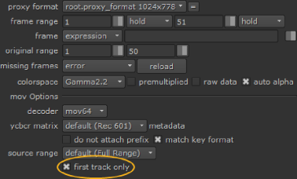
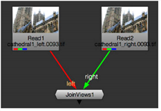

一旦您设置了视图，您就可以将图像读入 Nuke 。为了让事情变得更容易，例如，您阅读的图像应该在文件名中包含视图名称或视图名称的第一个字母 Filename.left.0001.exr , Filename.l.exr ,或 Lefteyefilename.0001.cin .
如果您正在使用 。Exr 文件，您的文件可以包含左眼的输入和右眼的输入，如 。Exr 文件支持单个文件中的多个视图。对于任何其他文件类型，您需要为左输入和右输入分别设置文件。
| 1。 | 选择 图像 > 阅读。 |
| 2. | 导航到包含用于左眼或右眼 (或在以下情况下) 的图像的文件 。Exr 和 。Mov 图像，两只眼睛)，并选择 打开 . |
| 3. | 执行以下操作之一: |
• 如果要读取的图像包含视图名称或视图的首字母 (例如, 左 , 右 , l 或 r ) 在他们的文件名中，用变量替换它 % V 或 % V 在 文件 读取节点控件的字段。使用 % V 替换整个视图名称 (例如, 左 或 右 )，和 % V 替换首字母 (例如, l 或 r )。当使用变量时, Nuke 读取丢失的输入，并将所有输入组合成一个输出。
例如，如果你阅读 图像。左。cin 并将名称改为 图像。% V.cin , Nuke 会在两者中阅读 图像。左。cin 和 图像。右。cin 具有相同的读取节点，前提是视图调用 左 和 右 存在于项目设置中。两个输入图像都将合并成一个输出。
注意: Mac 和 Linux 操作系统可以区分大小写或不区分大小写。如果您的操作系统是区分大小写的，您需要确保在命名左视图和右视图时使用正确的大小写，如 % V 变量只能检索视图名称中使用的大小写。
您也可以使用 % V 和 % V 目录级别的变量。例如，假设您已经设置了名为 测试左 , 测试中间 和 Testright ,并且您有以下目录和文件:
Mydirectory/testleft/image.testleft.cin
Mydirectory/testmiddle/image.testmiddle.cin
Mydirectory/testright/image.testright.cin
如果您现在阅读 image.testleft.cin 并将路径名更改为 Mydirectory/% V/image.% V.cin ,所有三个输入都将用相同的读取节点读取。
• 如果要读取的图像不包含视图名称或其首字母 (例如, 左 , 右 , l 或 r ) 在文件名中，不是立体声 。Exr 文件，为每个输入插入一个读节点，并使用 JoinViews 节点将它们组合成一个输出 (有关如何执行此操作的说明，请参见下面的说明)。
• 如果你想读的图像在立体声 。Exr 文件格式，您不需要做任何事情。然而，请记住，并非所有 。Exr 文件包含多个视图。如果您使用的文件不是，请按照前两点中的说明操作。
• 如果要读取的图像在多视图中 。Mov 文件格式，您需要打开读取节点的属性并禁用 仅第一轨道 .

你会注意到 。Mov 节点图中的读取节点现在标记为 表示多个视图。现在可以使用合成查看器上方的按钮在视图之间切换。
| 1。 | 选择 图像 > 阅读 读取包含不同视图的图像序列。 |
| 2. | 要插入 JoinViews 节点，请选择 视图 > JoinViews . |
| 3. | 将 JoinViews 节点的输入连接到适当的读取节点。在项目设置中创建的每个视图都应该有一个输入。输入用视图的名称标记。 |
如果已为视图指定颜色并选中 在 UI 中使用颜色？ 在 视图 在项目设置的选项卡中，连接箭头反映视图颜色。如果这种情况没有发生，箭头是黑色的，你可能用错误的方式连接了输入。检查是否已将每个读取节点连接到 JoinViews 节点的正确输入。

Nuke 将输入组合成一个输出。
|
|